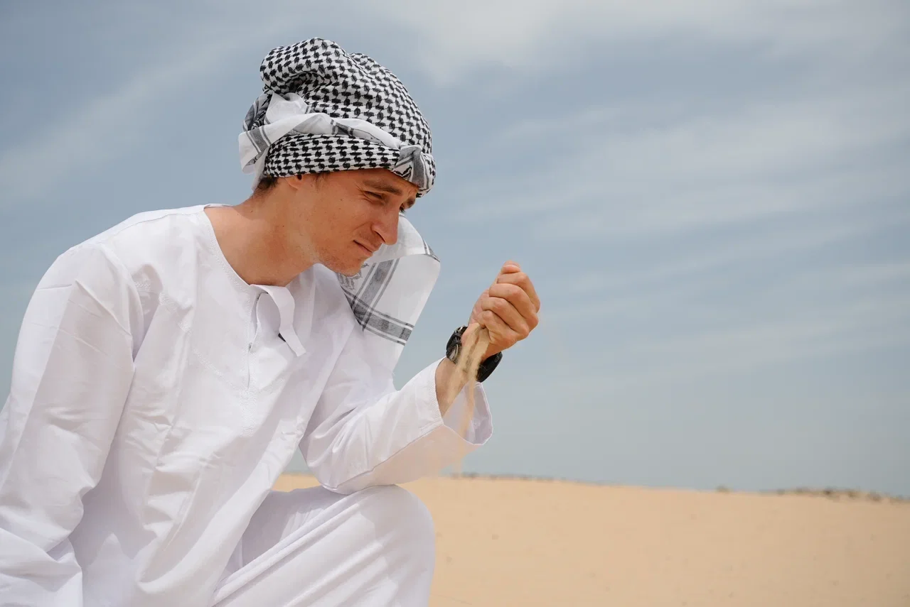

Founder & Head Coach
Ilya Fedorov
Master of Sport in triathlon and former professional swimmer. Ilya combines an athlete's racing experience with practical coaching for athletes who want to improve technique, structure their preparation and perform at their best.
EducationBachelor's degree · Lesgaft National State University
SportMaster of Sport in triathlon · former professional swimmer
Best forTriathlon preparation, swimming, running and individual race planning
Personal training1,000 AED